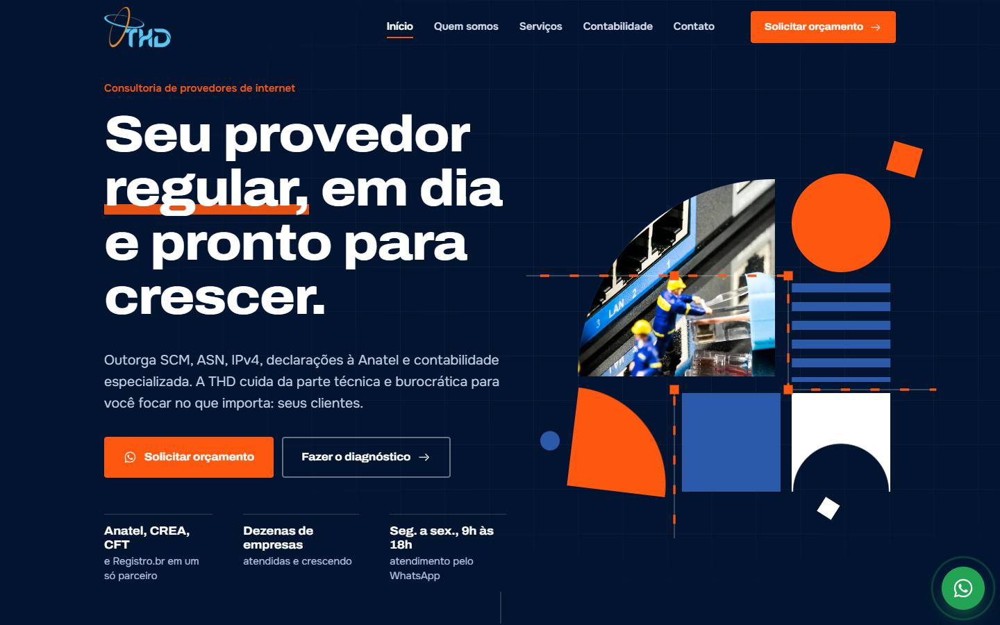
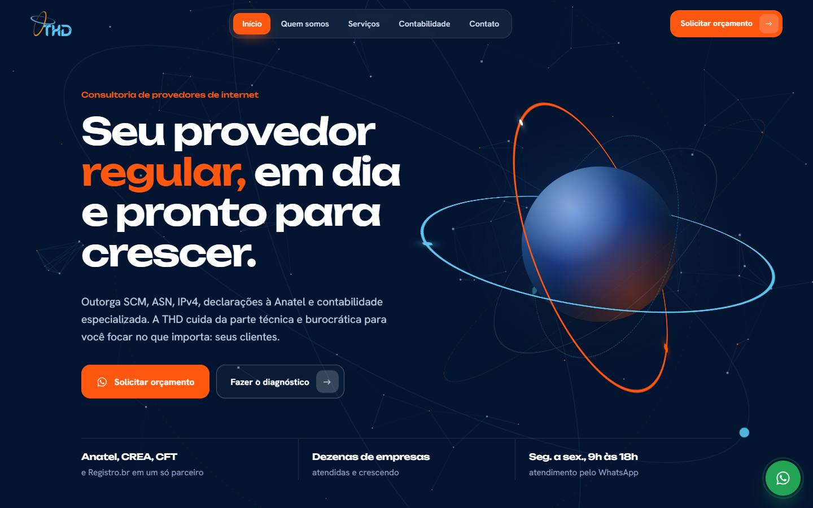
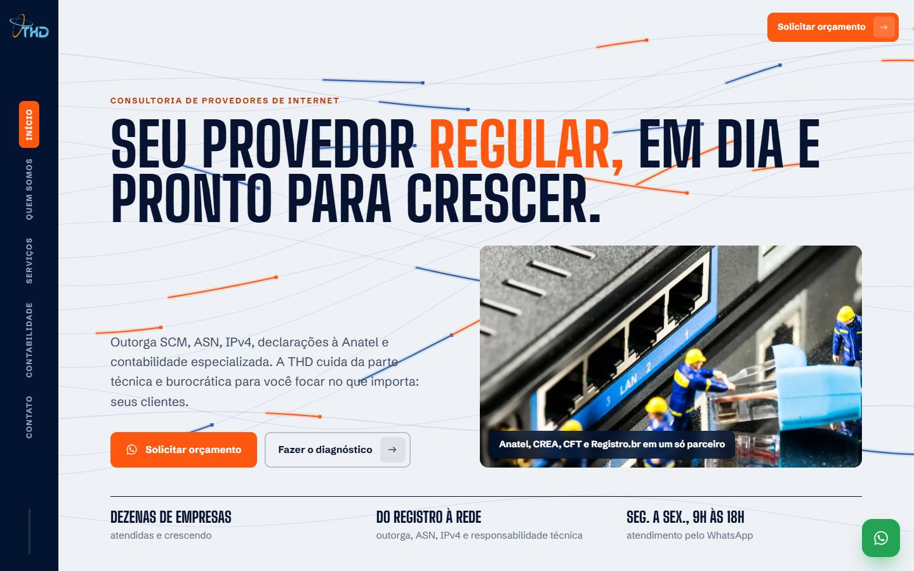

Modelo Blocos
Seu provedor montado peça por peça. Formas geométricas nas cores da marca se encaixam numa grade e trocam de lugar, ligadas por trilhas de circuito como as letras do logo. Jornada presa na rolagem e diagnóstico interativo.
Abrir o modelo
Modelo Órbita
Inspirado nos anéis do logo. Fundo escuro com um giroscópio 3D que inclina com o mouse, seções que sobem como lâminas, pilha 3D de serviços, jornada em trilho horizontal e diagnóstico em baralho de cartas.
Abrir o modelo
Modelo Fibra
A luz que corre pela fibra óptica. Base clara e editorial com títulos grandes, menu lateral, fios de luz no fundo, prisma 3D que gira com os serviços, trilha de fibra na jornada e rack 3D no diagnóstico.
Abrir o modelo